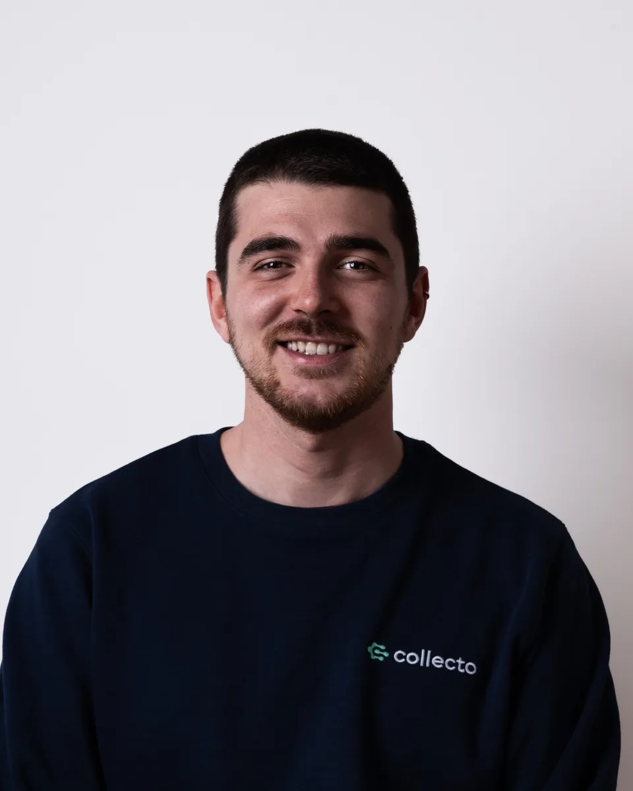

Ciao, sono Sebastiano.
Dalla fotografia allo UX/UI design: un percorso che mi ha portato a trasformare la sensibilità visiva in progettazione di esperienze digitali. In Collecto ho affinato questo approccio, contribuendo a creare interfacce e dinamiche di prodotto capaci di coinvolgere gli utenti e generare valore concreto.
Cerco un ruolo da UX/UI Designer in un team di prodotto, in startup e scale-up italiane, dove portare ricerca, interfacce e design system dalla prima idea allo sviluppo.

Come lavoro
Dal problema al componente, in quattro passaggi che porto in ogni progetto.
- RicercaInterviste, mappe delle assunzioni e test, per partire dal problema giusto.
- InterfacceFlussi completi, con stati di errore, vuoti e offline, prototipati prima dello sviluppo.
- Design systemToken, componenti e regole, con un changelog che allinea design e codice.
- AccessibilitàContrasti, aree di tocco e screen reader, verificati dal primo componente.
Dai miei progetti
Tre case study personali, dalla discovery al prototipo.

Esperienza
- UX/UI DesignerCollecto app · Milano · tempo pienogen 2026 – oggi
- UX/UI Designer, stageCollecto app · Milanolug 2025 – gen 2026
- Fashion PhotographerFreelance · Milano
- Photo Retoucher & Video EditorPixelModa · Milanofeb 2023 – lug 2023
Formazione
- Master in UX/UI DesignStart2Impactott 2023 – mag 2025
- Accademia di Fotografia di modaFerrari Fashion Schoolott 2019 – set 2022
- Istituto Tecnico, Grafica e comunicazioneIstituto Salesiano San Zeno2014 – 2019
Competenze e strumenti
Hard skill
- Discovery
- Wireframing
- Prototyping
- User testing
- Grafica
- Scrittura
- HTML
- CSS
- Design system
- Accessibilità
Strumenti
- Figma
- CleverTap
- Claude
- ChatGPT
- Photoshop
Soft skill
- Team working
- Networking
- Impatto sociale
- Proattività
- Precisione
- Mentoring
- People oriented
- Creatività
Lingue
- ItalianoMadrelingua
- IngleseIntermedio